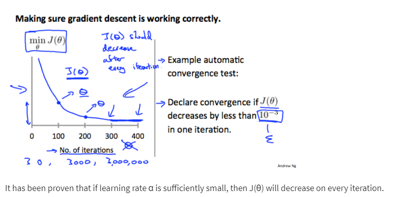
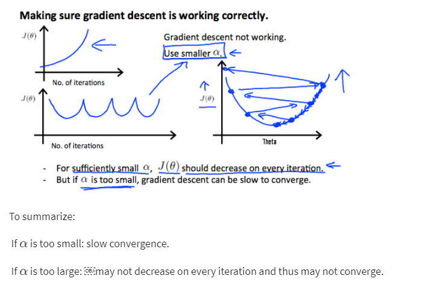

Debugging gradient descent- Make a plot with number of iterations on the x-axis. Now plot the ost function, J(θ) over
the number of iterations of gradient dscent. If J(θ) ever increases, then you probably need to decrease α .
Automatic convergence test. Declare convergence if J(θ) decreases by less than E in one Iteration, where E is some small value such as 10^(-3). However in practice its's difficult to choose this threshold value.

